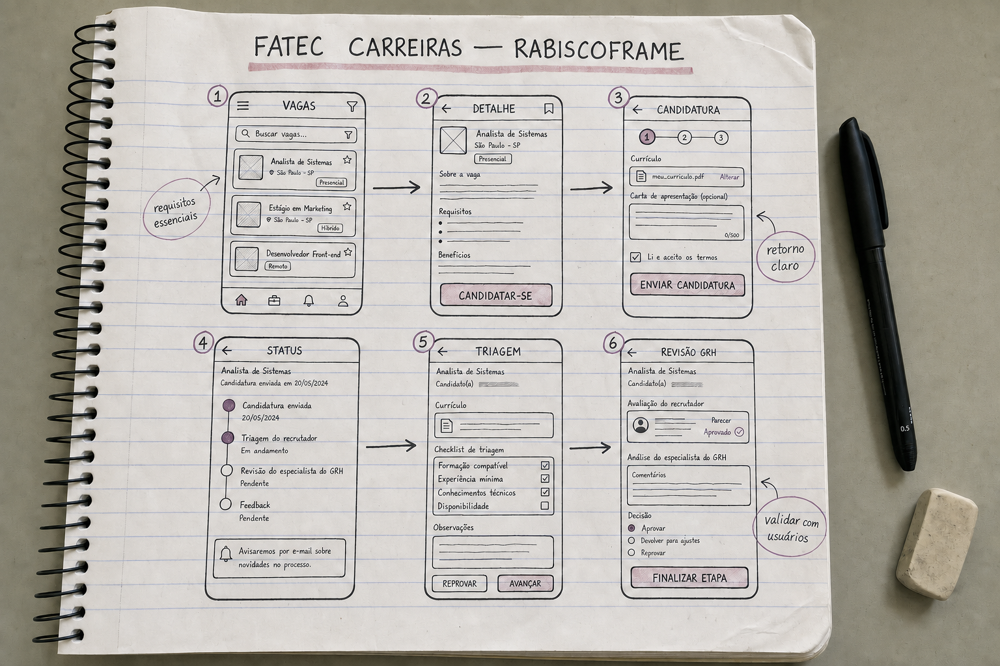
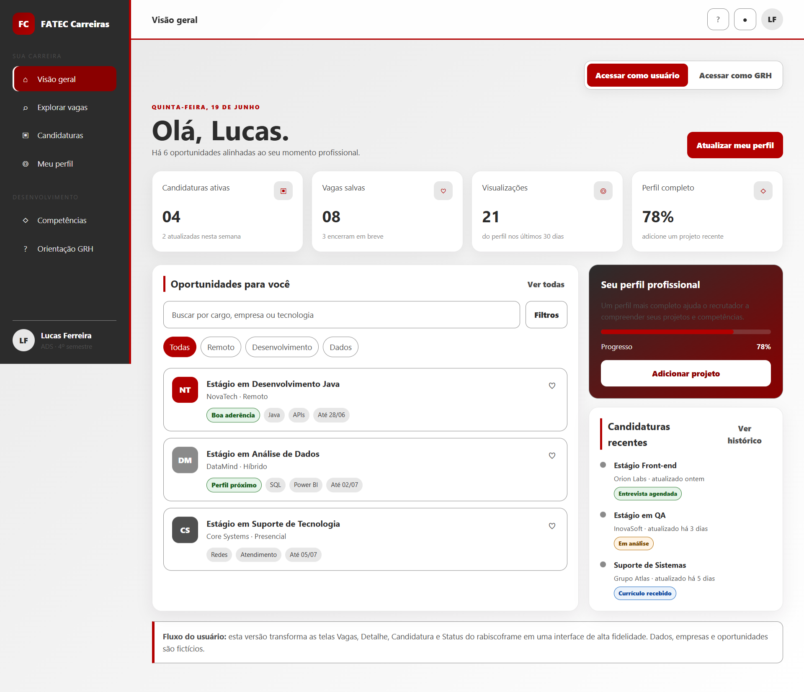
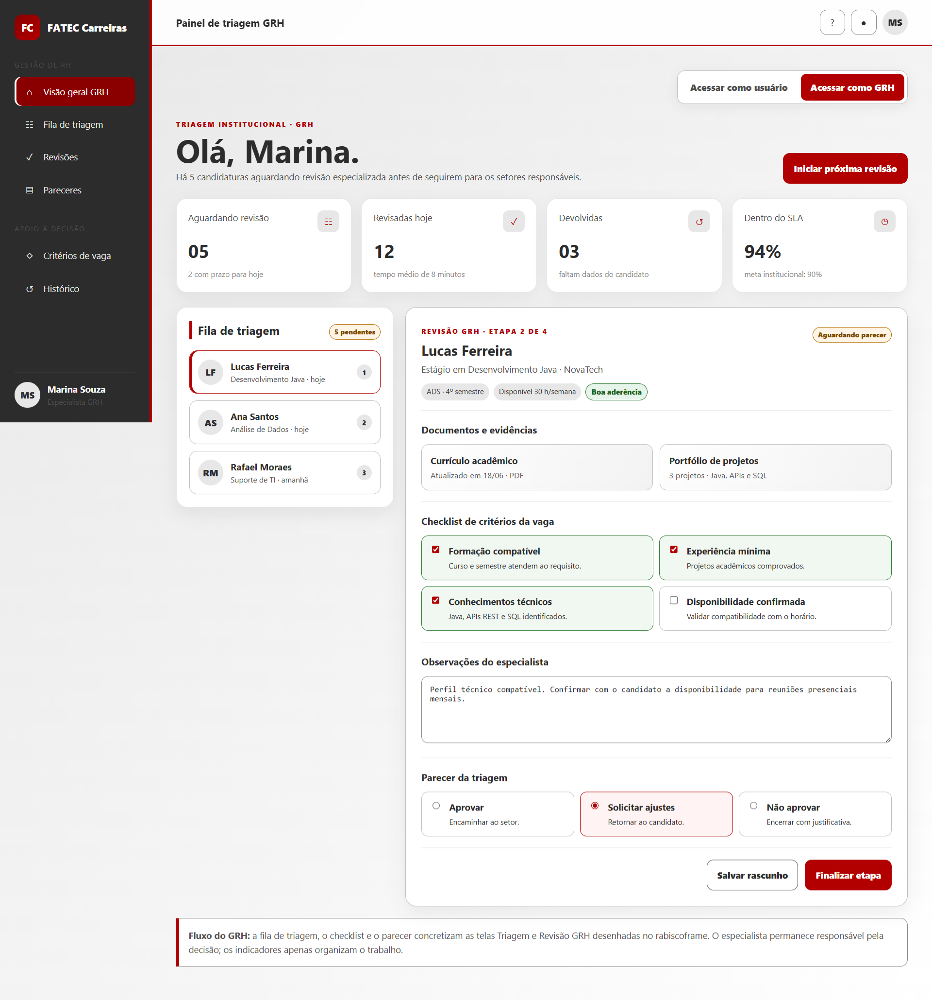

Estudantes têm dificuldade para interpretar se seu repertório atende a uma vaga; recrutadores recebem perfis desalinhados e gastam tempo para identificar candidatos compatíveis.
Briefing do problema
A investigação delimita o contexto de recrutamento para estágio e posições de entrada. Nesta fase, o foco é compreender comportamentos, expectativas e falhas de comunicação — sem definir funcionalidades.
Contexto do estudante
Quem busca a primeira oportunidade compara descrições extensas com uma experiência ainda em formação. Requisitos essenciais e desejáveis aparecem misturados, o silêncio após a candidatura aumenta a insegurança e uma recusa genérica não indica o que precisa ser desenvolvido.
Contexto do recrutamento
Vagas de entrada atraem candidaturas em volume. Currículos usam formatos e vocabulários diferentes, o que exige leitura manual e torna a comparação lenta. Quando o nível técnico esperado não está bem calibrado, bons perfis podem ser descartados ou candidaturas inadequadas avançam.
Contexto institucional
O Departamento de Gestão de Recursos Humanos (GRH) atua como especialista do domínio: aproxima linguagem acadêmica e linguagem de mercado, ajuda a interpretar níveis de experiência e identifica expectativas incompatíveis com vagas de entrada.
Recorte da investigação
O estudo observa a jornada desde a leitura da vaga até o retorno do processo seletivo. Não abrange contratação, admissão, gestão de desempenho ou desenho da solução digital.
Intenção da equipe
Compreender onde a comunicação se rompe para que estudantes, recrutadores e o especialista do GRH possam tomar decisões com expectativas mais coerentes.
EstudanteInterpreta a vaga, avalia o próprio repertório, prepara o currículo, candidata-se e aguarda retorno.
RecrutadorDescreve a necessidade, divulga a vaga, analisa candidaturas, seleciona perfis e comunica a decisão.
Especialista do GRHOrienta sobre níveis profissionais, competências e coerência entre a vaga anunciada e o público estudantil.
Leitura do problema com 5W1H
Cada dimensão descreve o fenômeno observado de forma específica. O método organiza o entendimento; não funciona aqui como plano de execução.
Desalinhamento de entendimento
A descrição da vaga, o currículo e os critérios usados na triagem não expressam competências e níveis de experiência de maneira comparável. Isso gera candidatura por tentativa e erro e retrabalho na seleção.
Três atores diretamente envolvidos
Estudantes que buscam estágio ou posição de entrada; recrutadores responsáveis pela triagem; e especialista do GRH, que conhece o domínio profissional e acadêmico.
Nos pontos de comunicação
O problema aparece em portais de vagas, descrições enviadas por empresas, currículos, formulários de candidatura, planilhas de triagem, mensagens de acompanhamento e devolutivas.
Durante todo o ciclo seletivo
Começa na redação e leitura da vaga, intensifica-se na comparação entre requisito e repertório, torna-se custo durante a triagem e permanece após respostas tardias ou genéricas.
Porque faltam critérios compartilhados
Empresas descrevem necessidades com vocabulários e expectativas diferentes; estudantes têm pouca referência para avaliar o próprio nível; e o conhecimento do especialista nem sempre participa do alinhamento inicial.
Resultados esperados da compreensão
Espera-se identificar as causas do desalinhamento, os momentos de maior incerteza, os critérios que os atores usam hoje e quais informações precisam ser esclarecidas antes de avançar para o espaço da solução.
Personas do contexto
Perfis compostos para representar padrões de comportamento dos atores. A instituição não é tratada como persona; o especialista do GRH aparece como participante humano do domínio.

Persona primária
Lucas Ferreira · 21 anos
Estudante do quarto semestre de Análise e Desenvolvimento de Sistemas. Desenvolveu projetos acadêmicos, mas ainda não teve experiência formal na área. Procura estágio enquanto concilia aulas, estudos e trabalho eventual.
ObjetivoConseguir a primeira experiência e apresentar melhor o que já sabe.
ComportamentoBusca vagas no celular, adapta o currículo e se candidata mesmo quando tem dúvidas.
FrustraçãoNão distingue requisitos obrigatórios de diferenciais e raramente recebe retorno útil.
NecessidadeEntender as expectativas da vaga e reconhecer lacunas reais de formação.
Um recorte da história de Lucas
Depois da aula, Lucas encontra uma vaga de estágio que cita Java, banco de dados, APIs, testes e “vivência com métodos ágeis”. Ele já construiu uma API em um projeto acadêmico, mas interpreta “vivência” como experiência profissional. Mesmo inseguro, passa parte da noite reescrevendo o currículo e envia a candidatura. Duas semanas depois, recebe apenas uma mensagem automática de encerramento.
Como o problema afeta sua rotina
Lucas troca horas de estudo por buscas repetidas, adapta o mesmo currículo para diferentes descrições e acompanha mensagens várias vezes ao dia. Sem conhecer o motivo das recusas, ele alterna entre estudar novas tecnologias aleatoriamente e candidatar-se a vagas para as quais acredita não estar preparado. O processo reduz sua confiança e dificulta a escolha do que realmente desenvolver.

Persona secundária
Roberto Almeida · 36 anos
Analista de recrutamento em uma empresa de médio porte. Conduz vários processos ao mesmo tempo e recebe currículos em formatos variados. Precisa responder rapidamente aos gestores sem conhecer em profundidade todas as tecnologias citadas.
ObjetivoApresentar uma lista curta de candidatos coerentes com a necessidade da área.
ComportamentoUsa palavras-chave, experiência declarada e formação para fazer a primeira triagem.
FrustraçãoRequisitos ambíguos e currículos pouco comparáveis aumentam a leitura manual.
NecessidadeCritérios técnicos compreensíveis e expectativas compatíveis com o nível da vaga.
Um recorte da história de Roberto
Na segunda-feira, o gestor de tecnologia pede a Roberto uma lista de candidatos até sexta-feira. A vaga foi descrita como júnior, mas exige dois anos de experiência e oito tecnologias. Em três dias chegam 94 currículos: alguns destacam projetos acadêmicos, outros apenas listam ferramentas. Sem um critério compartilhado, Roberto usa palavras-chave para reduzir o volume e depois precisa reler os perfis selecionados.
Como o problema afeta sua rotina
A triagem ocupa blocos longos da agenda e compete com entrevistas, reuniões e outros processos. Roberto interrompe o gestor para esclarecer requisitos, cria controles paralelos e adia retornos aos candidatos. Sob pressão, corre o risco de eliminar estudantes promissores que descrevem suas experiências com palavras diferentes das usadas na vaga.
Especialista do domínio
Marina Souza · especialista em Gestão de Recursos Humanos
Profissional que acompanha empregabilidade e práticas de recrutamento. Conhece a formação dos estudantes e a linguagem usada pelas empresas. É consultada quando há dúvida sobre senioridade, competências ou aderência de uma vaga ao público acadêmico.
ObjetivoAproximar as expectativas das empresas do repertório possível para estudantes em formação.
Rotina afetadaQuando é acionada somente após a divulgação, Marina precisa explicar exigências, revisar termos e tratar dúvidas que poderiam ter sido evitadas.
Um recorte da história de Marina
Ao revisar a vaga recebida por Roberto, Marina percebe que “dois anos de experiência” foi incluído como filtro genérico, embora o gestor aceite projetos acadêmicos consistentes. Ela também identifica que três ferramentas listadas são alternativas para a mesma competência. Sua análise revela que parte do desalinhamento nasce antes mesmo da candidatura.
Contribuição para a pesquisa: explicar critérios de seleção, distinguir competência de ferramenta e apontar expectativas incompatíveis com posições de entrada.
Demonstração prática
Uma vaga, três rotinas afetadas
O exemplo conecta as personas em uma mesma situação e mostra como uma descrição ambígua produz efeitos em cadeia, sem antecipar uma solução.
08h30 · SolicitaçãoO gestor pede a Roberto um estagiário, mas envia uma lista criada a partir do perfil de um profissional pleno.
11h00 · InterpretaçãoRoberto publica a vaga como recebeu. Marina ainda não foi consultada para avaliar nível e coerência.
20h40 · CandidaturaLucas reconhece parte das competências, mas acredita que precisa dominar todas. Ainda assim, envia o currículo.
Duas semanas depoisRoberto elimina o perfil pela ausência literal de uma palavra-chave; Lucas recebe uma recusa genérica; Marina descobre o desalinhamento tarde demais.
Efeito observado: Lucas perde tempo e confiança; Roberto acumula triagem e pode descartar um perfil adequado; Marina atua de forma corretiva. A origem comum é a falta de critérios e linguagem compartilhados no início do processo.
Matriz CSD
A matriz separa o que já possui evidência, o que ainda é hipótese e o que precisa de resposta. As validações abaixo registram os três itens de Suposições e os três de Dúvidas.
Certezas
- As descrições analisadas misturam requisitos obrigatórios e desejáveis.
- Os currículos consultados apresentam estruturas e níveis de detalhe diferentes.
- A ausência ou demora de retorno impede o estudante de compreender o resultado.
Suposições
- Critérios de vaga mais claros diminuem candidaturas desalinhadas.
- O estudante considera útil receber o motivo de uma não seleção.
- A participação do especialista do GRH reduz expectativas incoerentes para vagas de entrada.
Dúvidas
- Quais critérios pesam mais na triagem inicial?
- Quais trechos de uma vaga mais confundem o estudante?
- Em que momento o especialista do GRH deve ser consultado?
Registro das validações
Suposição 1 · validada Clareza reduz candidaturas feitas apenas por tentativa.
Comparação orientada de descrições mostrou que separar requisitos essenciais, desejáveis e nível esperado melhora a interpretação do estudante.
Evidência usada
Análise comparativa de descrições e leitura guiada com estudantes.
Análise comparativa de descrições e leitura guiada com estudantes.
Suposição 2 · validada O motivo da decisão tem valor para o estudante.
Nos relatos coletados, a resposta genérica encerra o processo, mas não ajuda a decidir o que estudar ou como ajustar futuras candidaturas.
Evidência usada
Relatos de estudantes sobre candidaturas anteriores.
Relatos de estudantes sobre candidaturas anteriores.
Suposição 3 · validada O especialista melhora a coerência do nível exigido.
A revisão de termos técnicos e de senioridade identificou exigências que não correspondiam a uma oportunidade de entrada.
Evidência usada
Revisão de vagas com olhar de Gestão de Recursos Humanos.
Revisão de vagas com olhar de Gestão de Recursos Humanos.
Dúvida 1 · respondida A primeira triagem combina formação, experiências e evidências práticas.
Projetos, estágio anterior e tecnologias relacionadas à vaga ajudam a interpretar o repertório; nenhuma palavra-chave isolada explica a decisão.
Resposta obtida com
Conversa contextual com recrutamento e análise do processo atual.
Conversa contextual com recrutamento e análise do processo atual.
Dúvida 2 · respondida Senioridade implícita e listas extensas geram maior confusão.
O estudante tem dificuldade quando a vaga não distingue o que é indispensável do que pode ser aprendido durante a experiência.
Resposta obtida com
Leitura guiada das vagas por estudantes.
Leitura guiada das vagas por estudantes.
Dúvida 3 · respondida A consulta deve ocorrer antes da divulgação da vaga.
Nesse momento ainda é possível alinhar nomenclatura, experiência e competências sem gerar candidaturas baseadas em uma expectativa equivocada.
Resposta obtida com
Mapeamento do fluxo com o especialista do GRH.
Mapeamento do fluxo com o especialista do GRH.
Mapas de jornada
Uma única vaga produz duas experiências simultâneas. De um lado, um estudante tenta provar seu potencial; do outro, um recrutador tenta encontrar esse potencial em meio a informações pouco comparáveis. As jornadas mostram ações, pensamentos e fricções até que o problema individual se transforme em impacto para todo o setor de trabalho.
História 1 · O candidato
Lucas começa a semana acreditando que encontrou sua primeira oportunidade.
Às 22h17 de uma terça-feira, depois da faculdade, Lucas abre uma vaga de estágio. Reconhece parte das tecnologias, mas a descrição pede “experiência comprovada”. Ele revisa o currículo até depois da meia-noite, envia a candidatura e passa os dias seguintes verificando o celular. A resposta chega duas semanas depois: “Seu perfil não foi selecionado”. Não há explicação.
Lucas
estudante
1 · DescobreEncontra a vaga entre anúncios de diferentes canais.Talvez esta seja minha chance de entrar na área.Descrições repetidas, incompletas ou desatualizadas.
2 · InterpretaCompara cada requisito com disciplinas e projetos acadêmicos.Projeto da faculdade conta como experiência?Requisitos essenciais e diferenciais aparecem misturados.
3 · Candidata-seReescreve o currículo e seleciona projetos para apresentar.Se eu não marcar todas as tecnologias, talvez nem leiam meu perfil.Não sabe quais evidências realmente sustentam sua candidatura.
4 · EsperaConsulta e-mail, mensagens e portal durante vários dias.Será que viram meu currículo ou eu já fui eliminado?Ausência de prazo, etapa ou confirmação compreensível.
5 · Recebe o desfechoObtém uma resposta genérica ou não recebe retorno.Não sei se me faltou conhecimento ou se me apresentei mal.A recusa não gera aprendizado para a próxima tentativa.
História 2 · O recrutador
Na mesma semana, Roberto tenta preencher a vaga antes que o projeto da empresa atrase.
Roberto recebe do gestor uma lista extensa de tecnologias para uma posição anunciada como estágio. A publicação atrai 94 candidaturas em três dias. Entre reuniões e entrevistas de outros processos, ele abre currículos com estruturas diferentes, procura palavras-chave e tenta descobrir quais projetos acadêmicos demonstram competência real. O prazo chega antes da clareza.
Roberto
recrutador
1 · Recebe a demandaTransforma a necessidade do gestor em uma descrição de vaga.Preciso publicar hoje, mas não conheço todas essas tecnologias.Expectativas técnicas e nível profissional podem ser incompatíveis.
2 · PublicaDivulga o texto nos canais disponíveis para cumprir o prazo.Se eu retirar um requisito importante, o gestor pode rejeitar todos depois.Prioridade e significado dos critérios não estão alinhados.
3 · OrganizaReúne dezenas de currículos em formatos e níveis de detalhe diferentes.Como comparar projeto acadêmico, curso e experiência profissional?As evidências dos candidatos não seguem uma linguagem comum.
4 · SelecionaFiltra perfis enquanto conduz outros processos seletivos.Posso estar deixando um bom candidato para trás.Pressão de tempo favorece atalhos e leitura por palavras-chave.
5 · EncerraEnvia respostas padronizadas para conseguir atender ao volume.Não consigo explicar individualmente cada decisão.Candidatos não aprendem e podem repetir o desalinhamento.
O desafio não é apenas encontrar currículos. É construir entendimento compartilhado.
01A linguagem das vagas não comunica com precisão o nível esperado.
02O estudante decide com pouca referência e recebe pouco aprendizado do processo.
03O recrutador compara informações desiguais; o especialista do GRH pode esclarecer o domínio.
Próxima etapa: ampliar a coleta de evidências antes de formular alternativas de solução. Esta apresentação não define funcionalidades, escopo técnico ou proposta de valor.
Product Discovery · Espaço da Solução
Do entendimento à interface.
Com o problema delimitado, começa a exploração de alternativas: observar o mercado, organizar a informação, tornar ideias visíveis e avaliar sua usabilidade.
Uma nova fase
Ideias deixam de ser opiniões e passam a ser hipóteses verificáveis.
O documento analisado propõe uma evolução gradual da solução. A equipe começa ampliando seu repertório, experimenta estruturas de baixo custo e acrescenta fidelidade somente após organizar conteúdo e navegação. O percurso termina com inspeção técnica da interface, antes dos testes com usuários.
Benchmarking
Analisar concorrentes diretos, indiretos e produtos análogos. Comparar fluxos, arquitetura da informação e padrões de interação para transformar referências em diretrizes, sem simplesmente copiar interfaces.
Rabiscoframe
Explorar rapidamente a organização do conteúdo no papel. Os esboços tornam visíveis hierarquia, agrupamentos e caminhos possíveis antes que detalhes estéticos encareçam as mudanças.
Wireframe
Converter os rabiscos em estruturas digitais de baixa ou média fidelidade. A etapa refina a proposta de interface, os estados necessários e o fluxo de navegação das tarefas principais.
Styleguide
Definir padrões visuais e comportamentais para cores, tipografia, espaçamento e componentes. O guia sustenta consistência e cria uma linguagem compartilhada entre design e desenvolvimento.
Protótipo de Alta Definição
Representar a experiência com aparência, conteúdo e interações próximas do produto pretendido. O protótipo permite simular tarefas críticas e preparar testes de usabilidade.
Avaliação Heurística
Inspecionar a interface segundo as dez heurísticas de Nielsen. Especialistas registram problemas, classificam sua severidade e indicam melhorias antes da validação com usuários.
06 → 11
Princípio de evolução: pesquisar antes de desenhar, estruturar antes de decorar, testar antes de implementar e justificar cada decisão com evidências.
Benchmarking
Análise exploratória de padrões encontrados em plataformas de carreira e recrutamento. A comparação observa a experiência do candidato, a operação do recrutador e a oportunidade de incluir o especialista do GRH.
| Critério | LinkedIn Jobs | Gupy | CIEE | Direção para FATEC Carreiras |
|---|---|---|---|---|
| Descoberta de vagas | Ponto positivo Busca ampla e filtros familiares. | Vagas organizadas por páginas de empresas. | Recorte reconhecível para estágio e aprendizagem. | Priorizar vagas de entrada e linguagem adequada ao repertório estudantil. |
| Leitura dos requisitos | Descrições variam conforme cada empresa. | Estrutura depende do processo configurado. | Foco em informações institucionais e elegibilidade. | Oportunidade Separar requisitos essenciais, desejáveis e competências desenvolvíveis. |
| Candidatura | Alterna entre candidatura simplificada e site externo. | Fluxos podem conter múltiplas etapas e testes. | Cadastro orientado ao perfil estudantil. | Reduzir repetição e explicar por que cada informação é solicitada. |
| Acompanhamento | Visibilidade varia conforme a origem da candidatura. | Centraliza etapas quando o processo ocorre na plataforma. | Consulta vinculada às oportunidades e serviços. | Oportunidade Apresentar etapa atual, próxima ação e responsável pelo retorno. |
| Feedback de desenvolvimento | Limitação Nem toda recusa explica lacunas. | Devolutiva depende da configuração da empresa. | Orientação profissional existe, mas pode estar separada da candidatura. | Relacionar a decisão às evidências do perfil, com linguagem educativa. |
| Mediação especializada | Não é o foco central. | Voltada principalmente à operação empresa–candidato. | Possui proximidade institucional com estudantes. | Diferencial Inserir o especialista do GRH na revisão da coerência da vaga. |
ManterBusca reconhecível, filtros objetivos, status visível e linguagem familiar.
EvitarFluxos longos sem contexto, requisitos misturados e respostas que não explicam a decisão.
ExplorarMediação do GRH, distinção entre competências e ferramentas e devolutiva formativa.
Limite da análise: as plataformas evoluem continuamente. Antes da apresentação final, a equipe deve registrar data, telas observadas e fluxos percorridos para transformar esta comparação exploratória em evidência auditável.
Rabiscoframe
Primeira tradução visual das hipóteses. O registro em papel deve mostrar alternativas de organização, sequência da tarefa e decisões descartadas — não apenas uma tela isolada.

Wireframe
Estrutura digital de baixa fidelidade para validar hierarquia, agrupamentos e fluxo. O exemplo representa o painel do estudante sem aplicar ainda a camada visual final.
HierarquiaTítulo e orientação primeiro; busca e filtros antes da lista de oportunidades.
ConteúdoCards devem destacar cargo, empresa, modalidade, requisitos essenciais e prazo.
AçõesVer detalhes é a ação principal; salvar e comparar permanecem secundárias.
Styleguide
Sistema visual compartilhado pelo portfólio e pelo protótipo. Os tokens abaixo definem contraste, consistência e comportamento dos componentes essenciais.
#2C2C2C · Deep CharcoalTítulos, texto principal e ações fortes
#4F4F4F · Smokey SteelTexto secundário, legendas e ícones
#8A8A8A · Fading SilverBordas, controles e estados desativados
#E7E7E7 · Misty GrayFundo principal da aplicação
#FFFFFF · BrancoCards, containers e áreas de leitura
Assinatura institucional adotada · Fatec / Centro Paula Souza
Aplicação restrita a marcos de identidade: banners, numeração de capítulos, linhas de seção, links ativos e chamadas principais. Essas cores não substituem os estados semânticos de sucesso, atenção, informação e erro.
#B20000 · Vermelho Fatec#8A0000 · Vermelho escuro#5B5B5B · Cinza institucional#FFFFFF · Branco
Tipografia
Título · Segoe UI Bold
Corpo · Segoe UI Regular · 16 px / 1,65
Rótulo · 12 px · peso 800 · caixa altaBotões
Altura mínima de 44 px, foco visível e rótulo orientado à ação.
Inputs
Label persistente, ajuda contextual e erro próximo ao campo.Cards
Estágio em DesenvolvimentoInformação essencial em blocos, ação principal previsível e borda de 1 px.
Estados visuais
Selecionado Atenção
Hover, foco, carregamento, vazio, sucesso e erro não dependem apenas de cor.
Bordas e sombras
Raio: 10, 14 e 20 px.
Borda: 1–2 px.
Sombra: 0 16px 40px rgba(25,0,25,.18).
4 px
microespaço
microespaço
8 px
elementos próximos
elementos próximos
16 px
componentes
componentes
24–48 px
seções
seções
Protótipo de alta definição
A estrutura do wireframe recebe conteúdo realista, componentes consistentes, estados visuais e comportamento responsivo. O protótipo foi separado para permitir apresentação e avaliação sem interferir na documentação.
Painel FATEC Carreiras
Interface navegável alinhada ao rabiscoframe: o estudante percorre vagas, detalhe, candidatura e status; o especialista do GRH acessa triagem, checklist, parecer e decisão.
Como visualizar a versão para celular no navegador
- Abra o protótipo e pressione F12 para acessar as ferramentas de desenvolvedor.
- Ative a barra de dispositivos pelo ícone de celular/tablet ou pressione Ctrl + Shift + M.
- Escolha um aparelho ou informe uma largura entre 320 e 760 px. Se necessário, atualize a página mantendo o modo responsivo ativo.


Avaliação heurística
Inspeção inicial do conceito proposto segundo as dez heurísticas de Nielsen. Os achados são hipóteses de usabilidade a confirmar no protótipo e não substituem testes com estudantes, recrutadores e especialista do GRH.
| Heurística | Risco observado | Impacto | Recomendação | Severidade |
|---|---|---|---|---|
| 1. Visibilidade do status | Candidatura pode parecer enviada sem confirmação ou etapa atual. | Reenvio, ansiedade e consultas ao RH. | Confirmação explícita, linha do tempo e data da última atualização. | 3 · Alta |
| 2. Sistema e mundo real | Termos técnicos e de senioridade podem não fazer sentido ao estudante. | Interpretação incorreta dos requisitos. | Usar linguagem do domínio, exemplos e explicações revisadas pelo GRH. | 2 · Média |
| 3. Controle e liberdade | Falta de opções para salvar rascunho, editar ou desistir antes do envio. | Perda de dados e candidatura incorreta. | Oferecer voltar, editar, salvar e confirmação antes da ação definitiva. | 3 · Alta |
| 4. Consistência e padrões | Status, botões e nomes podem variar entre telas. | Aumenta aprendizagem e erros de navegação. | Aplicar componentes e vocabulário definidos no styleguide. | 2 · Média |
| 5. Prevenção de erros | Currículo incompleto ou arquivo inválido descoberto somente no final. | Abandono e retrabalho. | Validar durante o preenchimento e avisar antes do envio. | 3 · Alta |
| 6. Reconhecimento, não memorização | Usuário precisa lembrar requisitos enquanto atualiza o perfil. | Omissão de evidências relevantes. | Manter resumo da vaga e progresso visíveis durante a candidatura. | 2 · Média |
| 7. Flexibilidade e eficiência | Mesmo percurso para usuário novo e recorrente. | Processo lento para quem já possui perfil completo. | Preenchimento progressivo, reaproveitamento autorizado e atalhos claros. | 1 · Baixa |
| 8. Estética e minimalismo | Excesso de indicadores pode competir com a decisão principal. | Sobrecarga cognitiva. | Exibir primeiro cargo, empresa, requisitos essenciais, prazo e ação. | 2 · Média |
| 9. Reconhecer e corrigir erros | Mensagens genéricas não explicam como recuperar o fluxo. | Usuário repete o erro ou abandona. | Informar problema, causa provável e ação corretiva junto ao campo. | 3 · Alta |
| 10. Ajuda e documentação | Dúvidas sobre competências, documentos e etapas ficam sem resposta. | Aumenta suporte e reduz autonomia. | Ajuda contextual, glossário e canal de orientação do GRH. | 1 · Baixa |
Próxima ação: executar inspeções individuais com 3 a 5 avaliadores, consolidar duplicidades e registrar captura da tela, heurística violada, severidade e correção aplicada.
Base de evidências
As conclusões desta versão foram organizadas a partir de análise de descrições de vagas, leitura de currículos, relatos de estudantes, conversa contextual com recrutamento e revisão do fluxo pelo especialista do GRH. Os registros detalhados devem permanecer anexados à documentação de pesquisa da equipe.
Equipe
André Coral Rodrigues · Bruno José Rodrigues · Guilherme A. Silva · Raul Gonçalves